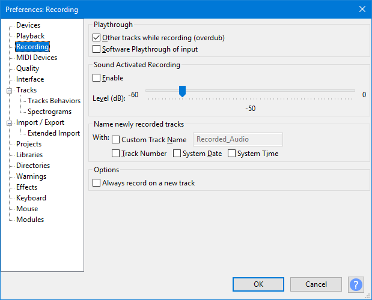

Recording Preferences
- Accessed by: (on a Mac )
- 
- Recording Preferences.
- Click on any other Preferences sections in the above image to read about those Preferences.
Playthrough
- Other tracks while recording (overdub): Makes existing tracks in the project play when you click the Record button in Transport Toolbar. You can decide which tracks will play according to their mute/solo buttons. When Overdub is enabled, recording will stop when the recording cursor reaches the end of a selection region. Turn overdub off if you want to record past the end of the selection.
- Software Playthrough of input: Allows you to hear the input by sending it to any chosen playback device. This permits the recording and playback device to be different. Expect some latency in the sound that you hear, due to the time taken for the computer to process the audio. This option may cause recording dropouts on older, slower computers.
| Software Playthrough must not be used for recording computer playback because it will create feedback echoes. |
Useful Tips:
|
Sound Activated Recording
- Sound Activated Recording: Enables or disables Sound Activated Recording. When enabled, click the Record button in Transport Toolbar to start the Sound Activated Recording session. Recording will now occur whenever the received input is above the Sound Activation Level you specify (see the item below). Recording will pause whenever the received input falls below that level. Press the Stop button to stop the recording session.
| You cannot pause Sound Activated recordings manually using the Pause button or corresponding menu item or shortcut. |
- Sound Activation Level (dB): Sets the threshold level in dB which triggers Sound Activated Recording. The range of the scale is determined by the Meter / Waveform dB range currently set in Interface Preferences. Although dB are logarithmic units, the actual scale values are displayed linearly (equally spaced for each value). The currently set dB value is displayed dynamically above the center of the scale.
For easier access, Overdub, Software Playthrough and Sound Activated Recording can be toggled on and off by using their respective entries in Transport Menu, or use Keyboard Preferences to allocate a keyboard shortcut to them.
Name newly recorded tracks
- Custom Track Name: Use this to replace Audacity's default name of Audio Track with one of your own choosing.
- Track Number: Appends a track number to each new track name.
- System Date: Appends the date to each new track name, in year-month-day format.
- System Time: Appends the start time of the recording to each new track name, in hours-minutes-seconds format, 24-hour clock.
Options
- Always record on a new track: Setting this to be "on" will cause Audacity to always record on a new track when you press the Record button
 on Transport Toolbar (or use the shortcut R).
on Transport Toolbar (or use the shortcut R).If you hold the button down, the Record button in Transport Toolbar will temporarily change to . Then clicking on this modified Record button (or using the shortcut Shift + R) will cause Audacity to record at the end of the currently selected, or only, track.